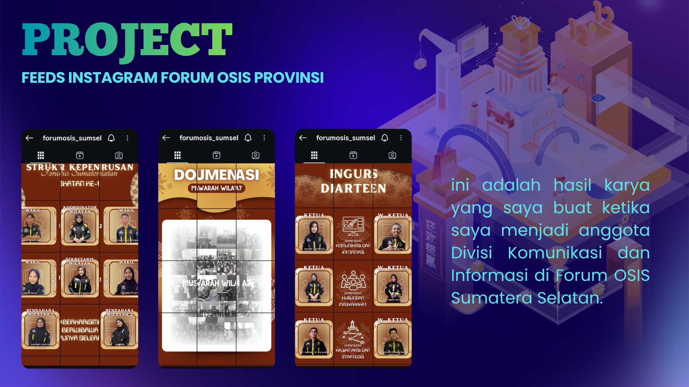
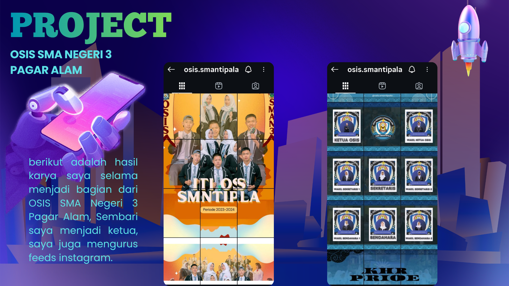

Mahasiswa Semester 2 · TRPL
Muhammad Ibnu Akbar
Teknologi Rekayasa Perangkat Lunak
Menghubungkan logika coding dan kreativitas digital untuk produk fungsional dengan UX yang luar biasa. Saat ini saya berfokus di
Teknologi Rekayasa Perangkat Lunak
Menghubungkan logika coding dan kreativitas digital untuk produk fungsional dengan UX yang luar biasa. Saat ini saya berfokus di
Nama Panggilan
Ibnu / Akbar
Tempat, Tanggal Lahir
Bandar Lampung, 22 Juli 2007
Hobi
Futsal · Badminton · Sepak Bola
D4 Teknologi Rekayasa Perangkat Lunak
Sains / MIPA
Figma
Python
HTML5
CSS3
JavaScript
JSON
MySQL
R Studio
Deretan proyek dan pencapaian yang telah saya kerjakan dengan penuh dedikasi.
Membuat dan melakukan hosting website untuk mitra kost. Full deployment dengan domain custom.
Live & OnlineAplikasi Python simulasi sistem mutasi rekening bank dengan logika transaksi lengkap.
Logic SuccessAplikasi kalkulator kalori dengan input BMI dan rekomendasi diet harian yang user-friendly.
User FriendlyMemenangkan kompetisi desain logo identitas kampus tingkat internal.
CHAMPIONRunner up kontes desain poster digital tingkat nasional.
RUNNER UPMengelola akun Instagram OSIS sekolah selama 2 tahun, meningkatkan engagement dan follower.
Engagement +Memimpin divisi digital Forum OSIS Sumatera Selatan, koordinasi konten multi-kota.
LeaderKoleksi visual terbaik dari proyek-proyek yang telah saya selesaikan.




Hubungi Saya
Punya proyek seru atau ingin diskusi? Reach out lewat platform favorit kamu!
Curriculum Vitae
Download CV lengkap saya dalam format PDF — siap untuk referensi atau rekrutmen.
Terima kasih telah mengunjungi portofolio saya!